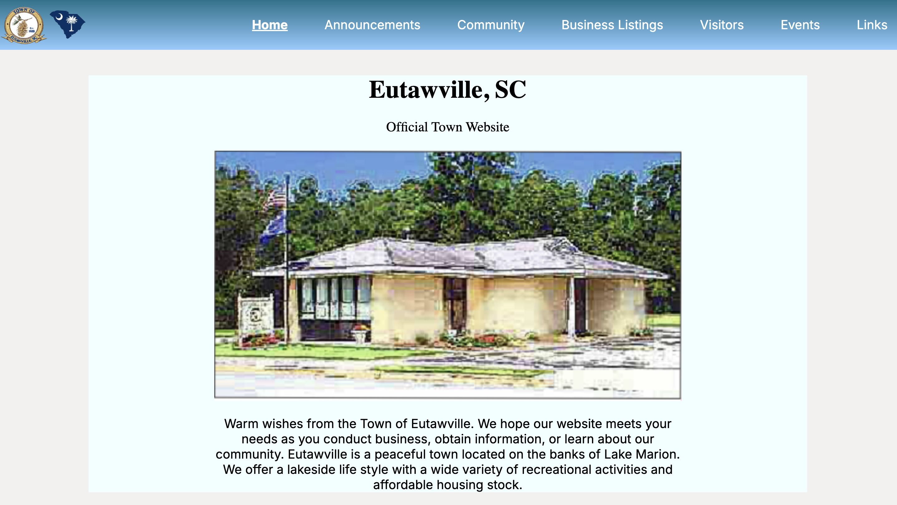
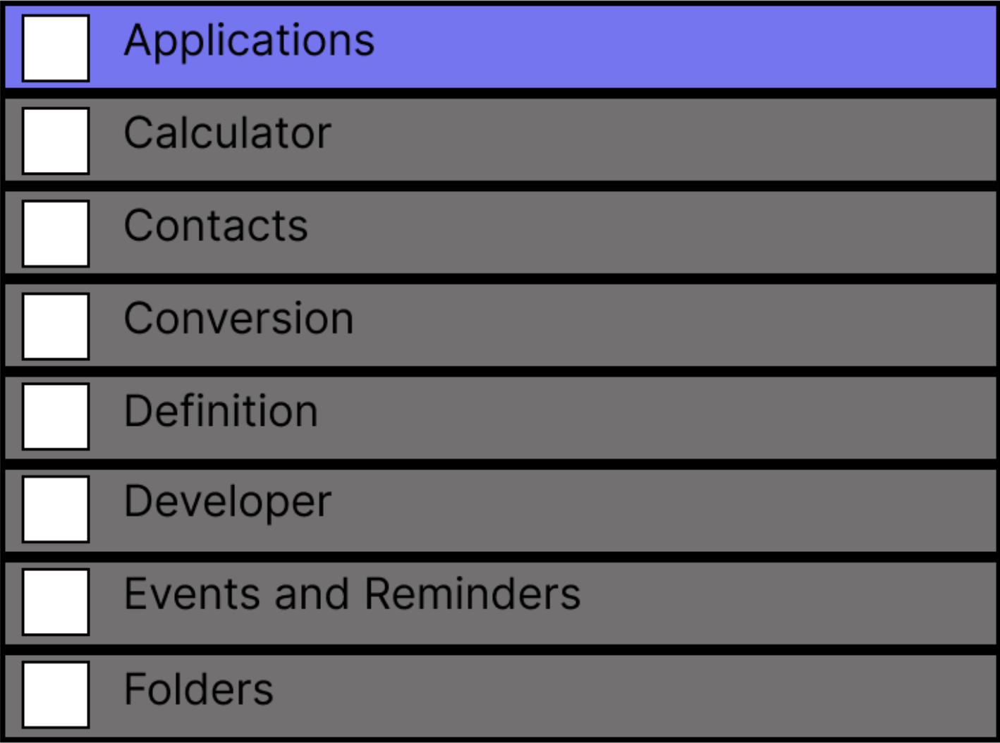

Featured Projects



Responsive Redesign
A full redesign of the official town website of Eutawville, South Carolina using Figma, HTML, and CSS
Accessible Components
An examination and reworking of checkboxes in popular applications using Figma, HTML, and CSS
AI Image Detection
TensorFlow model written in Python to detect if images are real or AI-generated using pixel-wise feature extraction techniques
Brand Identity Design
Complete brand identity package including logo, color palette, and marketing materials.